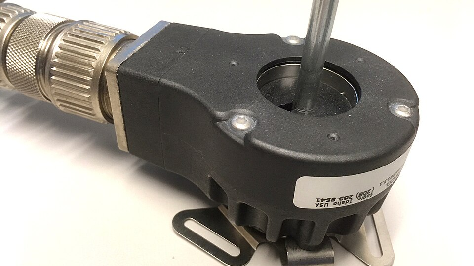

Repair a mobile robot’s motor, wiring or encoder
One wheel stalls, or the wheel turns but the robot reports zero speed. Start with mechanical freedom and prove each link from command to feedback.
A battery-powered two-wheel trainer with documented low-voltage motors and encoders. Use a stand that keeps the wheels clear. A Pololu Romi with its documented 32U4 controller is one reference. Start with the fault cases if you do not have hardware.
Identify the five parts before replacing anything
Point to the battery connector, motor driver, wheel motor and gearbox, encoder, and the controller receiving encoder counts. A driver carries the motor current. An encoder measures rotation. A powered wheel may still have an encoder fault. A healthy encoder reads zero when the wheel genuinely stops.

Photo by Marcmccomb, resized. Original photo · CC BY-SA 3.0.


Photo by Lambtron, scaled for the course. Original · CC BY-SA 4.0.

Use the Romi guide to identify motor leads and encoder connections as well as the board’s count modes. Keep the two wiring harnesses distinct. Pololu Romi 32U4 motor and encoder reference · Romi encoder kit with installation photos.
Prove movement before interpreting speed
- With power disconnected, check for hair, a rubbing wheel or a seized gearbox. Compare both sides by hand according to the donor’s guide. Check the motor plug and encoder plug for loose pins.
- Secure the robot on the stand. With your hand clear of the wheels, use a short, low-speed command that the donor supports. Record battery voltage under load, left/right physical motion and left/right reported counts. Prove the healthy side first.
- If the wheel moves with no counts, use the module pinout to verify supply, common and the two encoder channels. Turn the wheel by hand with motor commands inhibited and accessories powered as documented. Watch the count change or use the logic analyser in P15. Never drive a motor output from a meter.
- Only swap a pair of identical modules with power off and connectors that are documented as compatible. Check which side the symptom follows. Restore the original wiring before the closing test.
Watch on YouTube · Identify the motor clips and gearmotor location before opening the donor. Compare them with the encoder installation photographs in the model guide. Romi Chassis Assembly · Pololu Robotics and Electronics.
Use the failure pattern to pick a next measurement
| Observation | Next check |
|---|---|
| Motor drags by hand with no power | Look for a jam, misaligned wheel or damaged gearbox |
| Command present, one motor quiet and no counts | Compare driver input and output with the good side using the documented method |
| Wheel turns, counts stay at zero | Encoder power, connector, channel signals and the selected counter |
| Both wheels stop and board resets at acceleration | Measure battery voltage under the same load and inspect its connections |
On a differential-drive robot, wrong count polarity can make closed-loop control speed up the wrong wheel. Before floor testing, turn both wheels in the same physical direction and verify that your software interprets them consistently.
Catch a scale error with one marked revolution
The Pololu Romi has approximately 1,440 counts per wheel revolution when counting both edges of both channels. Use removable tape on a raised wheel and turn it one full revolution by hand with motor power inhibited as documented. Compare direction and count with the setup. On a configuration intended to count every edge, a repeatable result near 360 points toward edge-count settings before you buy an encoder. An intermittent count that jumps or drops at different angles calls for checking both signals and the physical assembly.
For a speed cross-check, a change of 720 counts in one second gives roughly 0.5 revolutions per second, or 30 rpm. The count rate reports the wheel, while slipping reduces distance travelled on the floor. Keep your count mode and gear ratio with the measurement. Pololu count resolution and channel wiring.
Retest the repair
Record short slow forward and reverse runs on the stand plus a stopped state. Confirm both wheel directions, counts that increase or decrease consistently, and the original fault condition. A new motor that spins is only one item in the test record.
T19 · Motors and variable speed drives
T33 · Robot motion, coordinate frames and encoder feedback